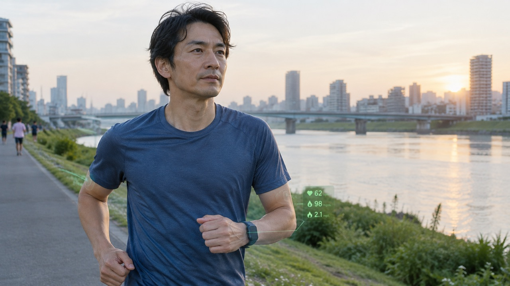
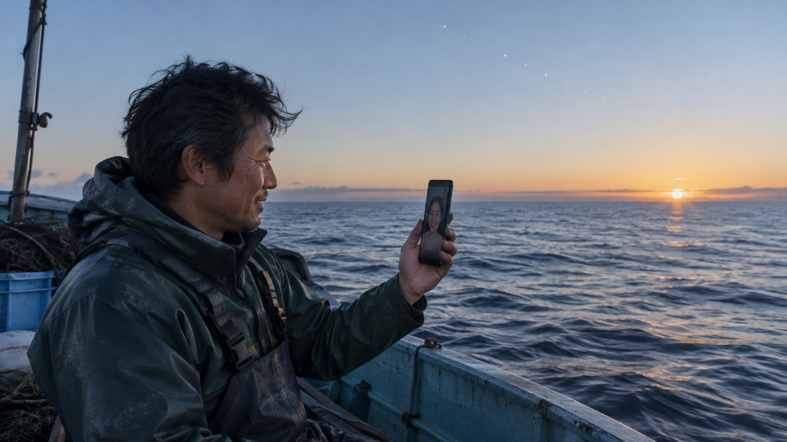
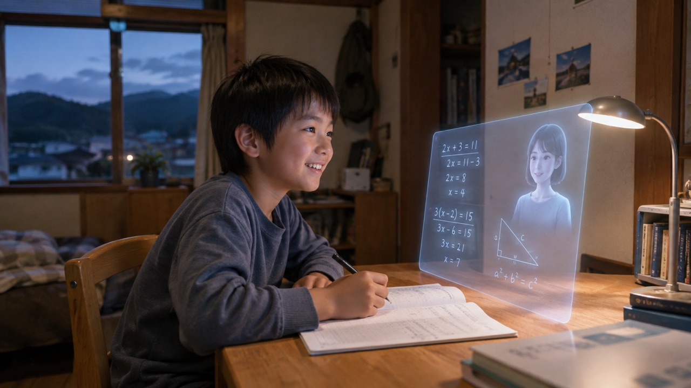
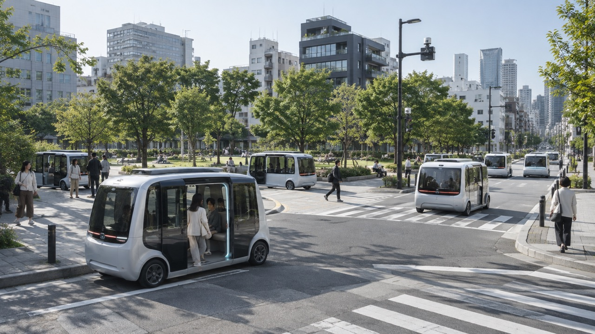
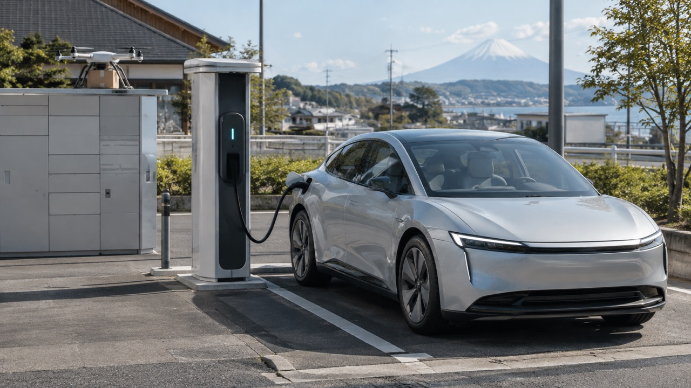
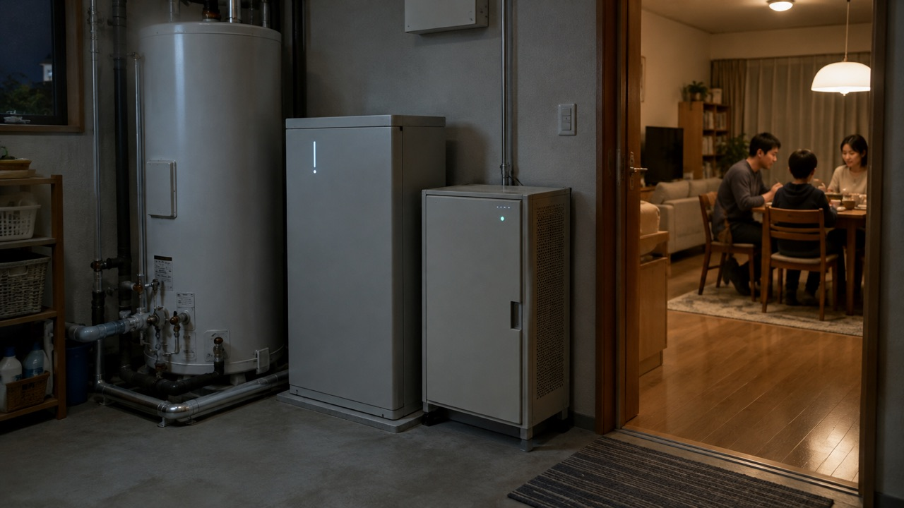
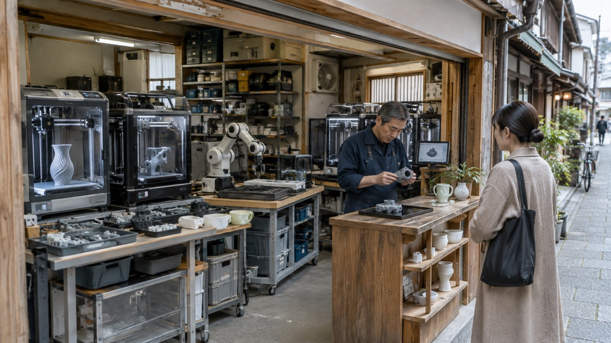
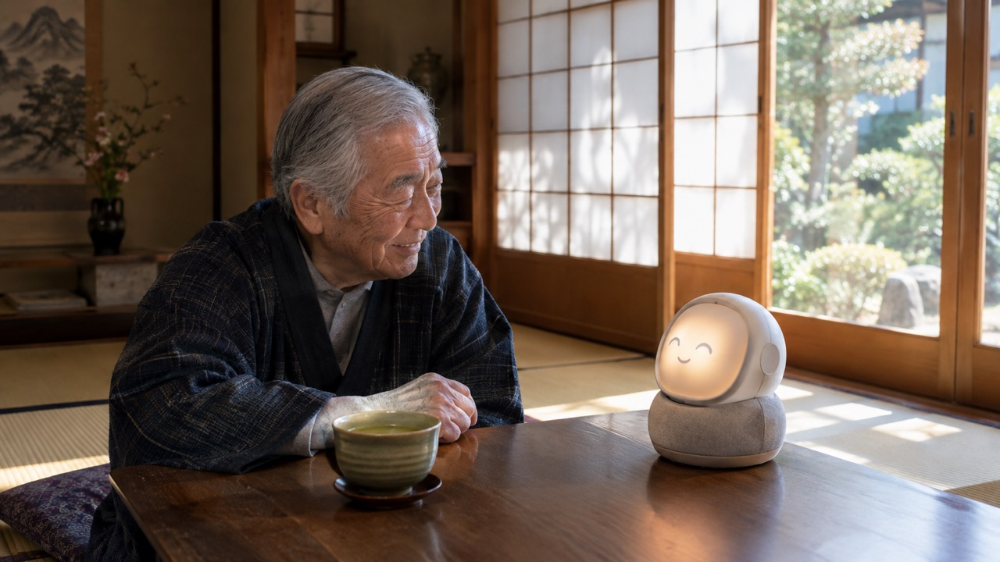
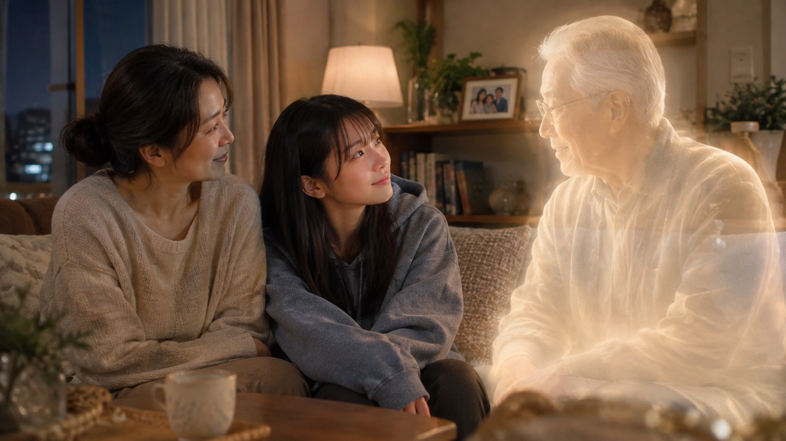

候補A 知的労働
すべての人に専属のAI職員が100人つき、それらが互いに交渉する
 2056年のイメージ：朝の食卓。契約書の確認や確定申告、旅行の手配をエージェントが並行して進める。本人は結果を承認する。
2056年のイメージ：朝の食卓。契約書の確認や確定申告、旅行の手配をエージェントが並行して進める。本人は結果を承認する。2026年弁護士・税理士・秘書・研究者を雇えるのは企業と富裕層に限られる。AIは個人が質問する道具の段階にある。
2056年1人につき数十から数百のエージェントが常時稼働する。契約書の確認や確定申告、旅行の手配、学習計画を代行する。
つながると個人のエージェント同士が直接交渉する。買い手と売り手のエージェントが価格と条件を決め、人は結果を承認するだけになる。取引の多くが人の操作を経ずに成立する。
兆し：2025年から2026年にかけて、コーディングや調査を自律で進めるエージェントが実用段階に入った。
実現の条件：推論コストの継続的な低下。エージェントに代理権を与える法制度（本人確認と責任の所在）。
確度 ●●●●○ 変化の大きさ ●●●●●
候補B 身体労働
すべての家にロボットの手が入り、街の物流がひとつの仕組みで動く
 2056年のイメージ：家庭のロボットが届いた食品を冷蔵庫に収納する。窓の外には自動配送車が停まっている。
2056年のイメージ：家庭のロボットが届いた食品を冷蔵庫に収納する。窓の外には自動配送車が停まっている。2026年産業用ロボットは工場の柵の中で同じ作業を繰り返している。家庭にあるのは掃除機型の単機能機にとどまる。
2056年汎用ロボットが家庭で料理・洗濯・介護の補助を行う。
つながると家庭のロボット、配送車、店舗の在庫がひとつの計画で動く。冷蔵庫の中身が減ると、注文から配送、収納までが人の手を経ずに完了する。介護の担い手不足を解消する手段になる。
兆し：複数の企業が汎用人型ロボットの量産計画を公表している。基盤モデルによる動作の学習が進んでいる。
実現の条件：1台の価格が自動車以下に下がること。家庭内での安全基準と事故時の責任の所在。
確度 ●●●○○ 変化の大きさ ●●●●●
候補C 医療
すべての体に常時測定するセンサーが付き、全員の健康データがつながる

2056年のイメージ：腕に貼ったセンサーが走行中も血糖と炎症の指標を測定し、手首の表示に送る。2026年血液検査や画像診断は病院に行って受ける。健康診断は年1回である。
2056年皮膚や体内のセンサーが血糖・血圧・炎症の指標を常時測定し、異常は症状が出る前に通知される。
つながると数億人のデータが匿名で集計され、感染症の流行や薬の副作用が日単位で検出される。治療法の効果の検証が臨床試験を待たずに進み、医療の中心が治療から予防に移る。
兆し：連続血糖測定器が糖尿病患者以外にも販売されている。スマートウォッチによる心電図の記録と不整脈の通知が実用化した。
実現の条件：測定できる項目の拡大。個人の健康データの管理権を本人が持つ制度。
確度 ●●●●○ 変化の大きさ ●●●●○
候補D エネルギー
すべての屋根に発電設備、すべての車に蓄電池が載り、それらが電力網でつながる
 2056年のイメージ：すべての屋根に太陽電池、すべての車に充電器と蓄電池がある住宅地。
2056年のイメージ：すべての屋根に太陽電池、すべての車に充電器と蓄電池がある住宅地。2026年電力は大規模発電所から家庭へ一方向に送られている。
2056年屋根・壁・窓の太陽電池と、電気自動車・家庭用の蓄電池が標準の設備になる。
つながると数千万の小さな発電・蓄電設備がひとつの発電所として制御される（仮想発電所）。家庭同士が電力を売買し、昼間の電力の価格はゼロに近づく。
兆し：太陽電池と蓄電池の価格は過去10年で大幅に下がった。日本でも仮想発電所の実証が進んでいる。
実現の条件：送配電網の制御の高度化。家庭間の電力取引を認める規制。
確度 ●●●●● 変化の大きさ ●●●○○
候補E 脳
すべての頭に入出力の装置が付き、考えたことをそのまま送れる
 2056年のイメージ：通勤電車の中で、耳の後ろの装置が考えた文章を入力している。手には何も持っていない。
2056年のイメージ：通勤電車の中で、耳の後ろの装置が考えた文章を入力している。手には何も持っていない。2026年脳とコンピュータの接続は、まひのある患者を対象とする臨床試験の段階にある。
2056年手術を伴わない装置で、文字入力や画面操作を考えるだけで行える。
つながると入力の速度の制約がなくなる。意図や感覚を、言語を介さずに他者やAIへ伝える研究が進む。
兆し：埋め込み型の装置で、まひのある患者がカーソル操作や文字入力を行った事例が報告されている。
実現の条件：手術を伴わない方式での精度の確保。思考のデータを保護する法制度。
確度 ●●○○○ 変化の大きさ ●●●●●
候補F 言語 ｜ 借りた型：ア 指数で下がるコスト
すべての耳に同時通訳が入り、言語の違いが会話の障壁ではなくなる
2056年のイメージ：喫茶店で、高齢の女性とブラジル出身の青年が、耳の通訳装置を介して会話している。2026年外国語での会話には、通訳者か、片方の語学力が必要である。翻訳アプリは画面を介した短いやりとりにとどまる。
2056年耳に入れた小型の装置が、相手の発言を遅延なく母語に変換する。相手には自分の声の調子のまま外国語で届く。
つながると観光・医療・行政の窓口で、言語を理由とする断りがなくなる。外国人の就労先が日本語能力で制約されなくなり、企業の採用と人の移動の範囲が広がる。
兆し：スマートフォンやイヤホンによる音声翻訳が一般向けに提供され、会話の同時通訳機能の実用化も進んでいる。
実現の条件：遅延の短縮と、方言・専門用語の精度の確保。通訳内容のプライバシー保護。
確度 ●●●●● 変化の大きさ ●●●○○
候補G 通信 ｜ 借りた型：ウ インフラを先に押さえる
すべての地点に衛星から電波が届き、地球上から圏外がなくなる

2056年のイメージ：沖合の漁船から、衛星経由でビデオ通話をしている。2026年携帯電話の電波は基地局の周辺に限られる。海上・山間部・災害時の被災地では通信が途絶える。
2056年低軌道の衛星群が地球全体を覆い、一般の端末が地上のどこからでも直接通信できる。
つながると遠隔医療、遠隔教育、AIの利用が地理の条件に左右されなくなる。災害時にも通信が維持され、基地局を整備できなかった地域にも、ほかの候補のサービスが届く。
兆し：低軌道衛星の通信網が運用され、一般のスマートフォンと衛星の直接通信も始まっている。
実現の条件：衛星の打ち上げ費用の低下。軌道上の混雑と宇宙ごみの管理。
確度 ●●●●● 変化の大きさ ●●●○○
候補H 教育 ｜ 借りた型：ア・オ 指数で下がるコスト／悲しみを減らす
すべての子どもに専属のAI家庭教師がつき、家計の差が学力の差に直結しなくなる

2056年のイメージ：地方の自宅で、AIの家庭教師と算数を学ぶ子ども。2026年個別指導の塾や家庭教師は費用が高く、利用できるかどうかは家計と住む地域で決まる。
2056年すべての子どもに、理解度と性格に合わせて教え方を変えるAIの家庭教師がつく。費用は教科書と同程度になる。
つながると学習の記録が学校と家庭の間で共有され、教員は一斉授業より対話と動機付けに時間を使う。学力の地域差と家計差が縮小する。
兆し：生成AIを用いた個別指導サービスが、学校と家庭に広がり始めている。
実現の条件：学習効果の検証。子どものデータの保護と、学校制度への組み込み。
確度 ●●●●○ 変化の大きさ ●●●●○
候補I 移動 ｜ 借りた型：エ 群戦略
車が個人の所有物から街の共有物になり、自動運転の車の群れとして配車される

2056年のイメージ：駐車場の跡地が公園になった交差点。共有の自動運転車が乗客を乗せ降ろしする。2026年自家用車は1日の大半を駐車場で過ごす。地方では、運転できなくなった高齢者の移動手段が不足している。
2056年運転席のない共有の車が呼び出しに応じて迎えに来る。車を所有する世帯は少数になる。
つながると全車両の位置と需要が一体で管理され、渋滞と待ち時間が最小になるように配車される。駐車場の用地が住宅や公園に転用される。分母が人から街へ移る、ほかの候補と逆向きの変化である。
兆し：米国や中国の一部都市では、運転手のいないロボタクシーが有料で運行されている。日本でも限定地域での自動運転の運行が始まっている。
実現の条件：事故時の責任の所在。地方での採算と、駐車場跡地の利用計画。
確度 ●●●○○ 変化の大きさ ●●●●○
候補J お金 ｜ 借りた型：ウ・エ インフラ／群戦略
すべての人と機械に財布が付き、機械同士が自動で支払いを行う

2056年のイメージ：無人の電気自動車が充電を終え、充電器との間で支払いを自動で済ませる。2026年支払いは人が行う。機械が料金を払う場合も、人の口座と人の承認を経る。
2056年車・ロボット・AIエージェントがそれぞれ財布を持ち、決められた上限の範囲で支払いを行う。
つながると充電・駐車・通行料・計算資源の利用料が、機械同士の間で1円未満の単位で精算される。候補A・Bのエージェントとロボットが経済活動の主体になる。
兆し：電子決済とステーブルコインの制度整備が各国で進んでいる。AIエージェントが決済を行うための仕組みの開発も始まっている。
実現の条件：機械による支払いの上限と取消しの仕組み。不正利用時の責任の所在。
確度 ●●●○○ 変化の大きさ ●●●○○
候補K 計算資源 ｜ 借りた型：ア・エ 指数で下がるコスト／群戦略
すべての家と車に計算機が載り、余った計算能力を電力と同じように売買する

2056年のイメージ：家庭の設備室。蓄電池と給湯器の横に計算機があり、夜間に計算能力を貸し出している。2026年AIの計算は大規模なデータセンターに集中し、電力と用地が不足している。
2056年家庭と車に高性能の計算機が標準で搭載され、使わない時間の計算能力を貸し出せる。
つながると数千万台の計算機が1つの計算基盤として運用される。太陽電池の発電が余る時間帯に計算を集め、電力と計算を一体で最適化する。候補Dと同じ、各家庭で余ったものを売買する構造である。
兆し：生成AIの普及で計算資源の需要が急増し、データセンターの電力と用地が不足している。端末側でAIを動かす半導体の搭載も進んでいる。
実現の条件：分散した計算機を安全に束ねる技術。電力系統との一体の制御。
確度 ●●●○○ 変化の大きさ ●●●○○
候補L 製造 ｜ 借りた型：イ・ア タイムマシン経営／指数で下がるコスト
すべての町に小型の工場が置かれ、物ではなく設計データが送られる

2056年のイメージ：商店街の小型工場。3Dプリンタで交換部品を製造している。2026年工業製品は大規模な工場で量産され、在庫として倉庫に保管された後、長距離を輸送される。
2056年町ごとに3Dプリンタとロボットを備えた小型の工場があり、交換部品や日用品をその場で製造する。
つながると設計データが世界中で流通し、物の輸送と在庫が減る。修理用の部品が製造終了で手に入らなくなる問題が解消される。
兆し：金属3Dプリンタが、航空機やロケットの部品製造に使われている。
実現の条件：量産品に対する単価の競争力。設計データの知的財産の保護。
確度 ●●○○○ 変化の大きさ ●●●○○
候補M 遺伝子 ｜ 借りた型：ア 指数で下がるコスト
すべての人のゲノムが解析され、薬と治療が個人ごとに処方される
2056年のイメージ：診療所で、医師が患者のゲノム解析にもとづく薬の計画を説明している。2026年薬の種類と量は、平均的な患者を基準に決められている。薬の効果や副作用は、使ってみるまで分からない。
2056年出生時または初診時にゲノムが解析され、薬の選択と量、検診の間隔が個人ごとに決まる。
つながると数億人のゲノムと治療結果が匿名で集計され、薬の効果がある人とない人の違いが特定される。候補Cのセンサーのデータと組み合わせることで、予防の精度が上がる。
兆し：個人のゲノム解析の費用は、最初の解読と比べて大幅に下がった。がん治療では、遺伝子検査にもとづく薬の選択が保険診療で行われている。
実現の条件：遺伝情報による差別を防ぐ法制度。医師の解釈を支援する仕組み。
確度 ●●●●○ 変化の大きさ ●●●●○
候補N 孤独 ｜ 借りた型：オ 悲しみを減らす
すべての独居者にAIの話し相手がつき、異変があれば家族と医療機関に通知される

2056年のイメージ：独り暮らしの男性が、卓上のAIと会話している。2026年独居の高齢者の見守りは、家族の電話や訪問、センサーによる安否確認にとどまる。
2056年AIの話し相手が日常の会話を通じて、体調と気分の変化を把握する。
つながると異変を検知すると、家族・かかりつけ医・地域の支援者に通知される。孤立死と認知機能の低下を早い段階で把握できるようになる。
兆し：会話型のロボットやAIスピーカーを使った、高齢者の見守りサービスが提供されている。
実現の条件：会話の記録の扱いに関する本人の同意。人による支援との役割分担。
確度 ●●●●○ 変化の大きさ ●●●●○
候補O 記憶 ｜ 借りた型：オ 悲しみを減らす
すべての人の声と判断がAIの分身として残り、亡くなった後も家族と対話できる

2056年のイメージ：母と娘が、亡くなった祖父のAIの分身と話している。2026年故人の記録は写真・動画・手紙として残り、一方向に見返すものにとどまる。
2056年生前の会話・文章・声から学習したAIの分身と、家族が対話できる。
つながると家族の記憶や助言が世代を越えて引き継がれる。一方で、本人の同意のない分身の作成や、遺族の依存が社会問題になる。
兆し：故人の声や文章を学習させた対話サービスが、すでに一部で提供されている。
実現の条件：生前の本人の同意の制度化。分身の削除と相続の扱い。
確度 ●●●○○ 変化の大きさ ●●●●○
パソコンの見通しが当たった理由は、個別の技術の予測ではなく、「分母が組織から人へ移り、それがつながる」という型にあった。15の候補のうち、30年後の生活を変える度合いが最も大きいのは、知的労働と身体労働の2つである。確度が最も高いのは言語・通信・エネルギーの3つで、2056年を待たずに実現する可能性がある。移動だけは分母が人から街へ移る逆向きの変化であり、所有の単位は減る方向にも動く。